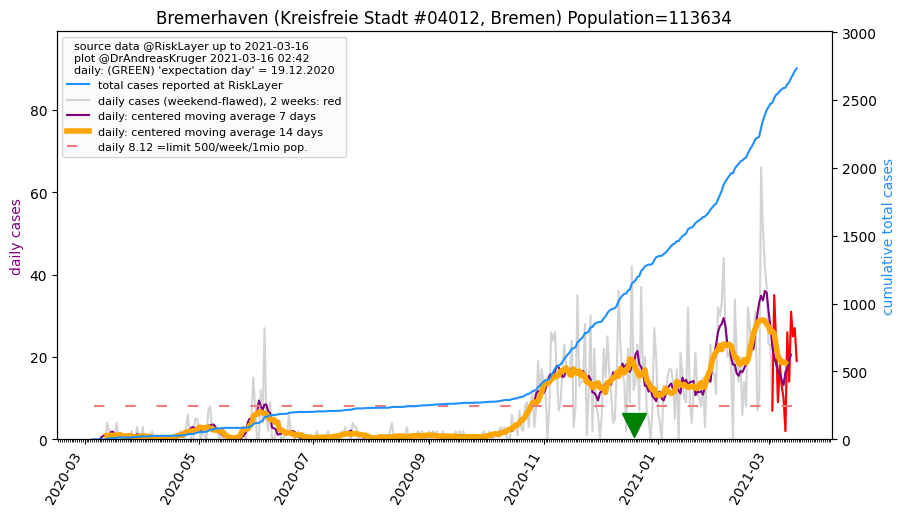

Up to about.html or to overview of Germany
Or down to Kreise (districts)

Bremen, and its 2 districts (24.06.2020)
 population: 682,986 --> current prevalence: 2424 known infected per 1 million population
population: 682,986 --> current prevalence: 2424 known infected per 1 million population
total cases: [3, 3, 4, 4, 4, 4, 22, 32, 42, 48, 53, 56, 57, 66, 75, 118, 126, 167, 172, 175, 195, 212, 244, 263, 278, 290, 297, 315, 330, 341, 354, 388, 393, 395, 422, 442, 451, 451, 477, 477, 489, 497, 504, 553, 564, 582, 601, 607, 625, 673, 708, 720, 740, 754, 759, 796, 827, 859, 860, 875, 893, 894, 917, 966, 998, 1025, 1044, 1056, 1059, 1079, 1106, 1132, 1153, 1167, 1174, 1240, 1259, 1276, 1276, 1296, 1299, 1312, 1313, 1323, 1348, 1372, 1404, 1412, 1412, 1412, 1448, 1464, 1500, 1514, 1519, 1534, 1535, 1550, 1568, 1574, 1584, 1584, 1584, 1596, 1610, 1622, 1629, 1639, 1648, 1651, 1657, 1656]
Bremen's 2 Kreise
Sorted by 'expectation day'
Click on name of Kreis to see detailed data. If not all visible, expand table area, or use scrollbar.
Click on column header name, to sort by that column; click again for other direction.
| 05.03.2020 | 06.03.2020 | 07.03.2020 | 08.03.2020 | 09.03.2020 | 10.03.2020 | 11.03.2020 | 12.03.2020 | 13.03.2020 | 14.03.2020 | 15.03.2020 | 16.03.2020 | 17.03.2020 | 18.03.2020 | 19.03.2020 | 20.03.2020 | 21.03.2020 | 22.03.2020 | 23.03.2020 | 24.03.2020 | 25.03.2020 | 26.03.2020 | 27.03.2020 | 28.03.2020 | 29.03.2020 | 30.03.2020 | 31.03.2020 | 01.04.2020 | 02.04.2020 | 03.04.2020 | 04.04.2020 | 05.04.2020 | 06.04.2020 | 07.04.2020 | 08.04.2020 | 09.04.2020 | 10.04.2020 | 11.04.2020 | 12.04.2020 | 13.04.2020 | 14.04.2020 | 15.04.2020 | 16.04.2020 | 17.04.2020 | 18.04.2020 | 19.04.2020 | 20.04.2020 | 21.04.2020 | 22.04.2020 | 23.04.2020 | 24.04.2020 | 25.04.2020 | 26.04.2020 | 27.04.2020 | 28.04.2020 | 29.04.2020 | 30.04.2020 | 01.05.2020 | 02.05.2020 | 03.05.2020 | 04.05.2020 | 05.05.2020 | 06.05.2020 | 07.05.2020 | 08.05.2020 | 09.05.2020 | 10.05.2020 | 11.05.2020 | 12.05.2020 | 13.05.2020 | 14.05.2020 | 15.05.2020 | 16.05.2020 | 17.05.2020 | 18.05.2020 | 19.05.2020 | 20.05.2020 | 21.05.2020 | 22.05.2020 | 23.05.2020 | 24.05.2020 | 25.05.2020 | 26.05.2020 | 27.05.2020 | 28.05.2020 | 29.05.2020 | 30.05.2020 | 31.05.2020 | 01.06.2020 | 02.06.2020 | 03.06.2020 | 04.06.2020 | 05.06.2020 | 06.06.2020 | 07.06.2020 | 08.06.2020 | 09.06.2020 | 10.06.2020 | 11.06.2020 | 12.06.2020 | 13.06.2020 | 14.06.2020 | 15.06.2020 | 16.06.2020 | 17.06.2020 | 18.06.2020 | 19.06.2020 | 20.06.2020 | 21.06.2020 | 22.06.2020 | 23.06.2020 | 24.06.2020 | 7days new cases | Kreis | Prev. p.1mio | 7days Incid.p.1mio | Population | expectation day | Reff_4_7 | Bundesland | info |
|---|
| 0 | 0 | 0 | 0 | 0 | 0 | 0 | 0 | 4 | 6 | 8 | 8 | 8 | 12 | 13 | 14 | 14 | 14 | 14 | 14 | 14 | 16 | 16 | 16 | 19 | 20 | 20 | 23 | 22 | 22 | 23 | 23 | 25 | 25 | 26 | 26 | 26 | 26 | 26 | 26 | 26 | 26 | 26 | 27 | 27 | 27 | 27 | 29 | 30 | 30 | 32 | 38 | 40 | 40 | 40 | 45 | 50 | 53 | 53 | 55 | 56 | 56 | 63 | 71 | 73 | 76 | 79 | 81 | 81 | 83 | 83 | 85 | 85 | 85 | 85 | 85 | 85 | 85 | 85 | 84 | 85 | 86 | 86 | 89 | 92 | 97 | 112 | 120 | 120 | 120 | 132 | 136 | 163 | 168 | 170 | 179 | 179 | 179 | 181 | 183 | 187 | 187 | 187 | 188 | 189 | 195 | 197 | 199 | 199 | 200 | 202 | 202 | 13 | Bremerhaven_KS | 1777 | 114 | 113,634 | 73.1 | 1.08 | Bremen | |
| 3 | 3 | 4 | 4 | 4 | 4 | 22 | 32 | 38 | 42 | 45 | 48 | 49 | 54 | 62 | 104 | 112 | 153 | 158 | 161 | 181 | 196 | 228 | 247 | 259 | 270 | 277 | 292 | 308 | 319 | 331 | 365 | 368 | 370 | 396 | 416 | 425 | 425 | 451 | 451 | 463 | 471 | 478 | 526 | 537 | 555 | 574 | 578 | 595 | 643 | 676 | 682 | 700 | 714 | 719 | 751 | 777 | 806 | 807 | 820 | 837 | 838 | 854 | 895 | 925 | 949 | 965 | 975 | 978 | 996 | 1023 | 1047 | 1068 | 1082 | 1089 | 1155 | 1174 | 1191 | 1191 | 1212 | 1214 | 1226 | 1227 | 1234 | 1256 | 1275 | 1292 | 1292 | 1292 | 1292 | 1316 | 1328 | 1337 | 1346 | 1349 | 1355 | 1356 | 1371 | 1387 | 1391 | 1397 | 1397 | 1397 | 1408 | 1421 | 1427 | 1432 | 1440 | 1449 | 1451 | 1455 | 1454 | 33 | Bremen_KS | 2553 | 57 | 569,352 | 54.2 | 0.79 | Bremen | |
Bremerhaven (Kreisfreie Stadt #4012, Bremen) Population=113634 AGS=4012
Neighbours within 50 km: Cuxhaven_LK, Wesermarsch_LK, Wilhelmshaven_KS, Osterholz_LK, Friesland_LK, Bremen_KS
Kreisfreie Stadt Bremerhaven population: 113,634 --> current prevalence: 1777 known infected per 1 million people.
sources: 1, 2, 3; other sites: AI.CS.TU-Dortmund #AGS04012, search last week, Bremerhaven: duckduckgo, google
total cases: [0, 0, 0, 0, 0, 0, 0, 0, 4, 6, 8, 8, 8, 12, 13, 14, 14, 14, 14, 14, 14, 16, 16, 16, 19, 20, 20, 23, 22, 22, 23, 23, 25, 25, 26, 26, 26, 26, 26, 26, 26, 26, 26, 27, 27, 27, 27, 29, 30, 30, 32, 38, 40, 40, 40, 45, 50, 53, 53, 55, 56, 56, 63, 71, 73, 76, 79, 81, 81, 83, 83, 85, 85, 85, 85, 85, 85, 85, 85, 84, 85, 86, 86, 89, 92, 97, 112, 120, 120, 120, 132, 136, 163, 168, 170, 179, 179, 179, 181, 183, 187, 187, 187, 188, 189, 195, 197, 199, 199, 200, 202, 202]
Back to top or: Up to about.html
Bremen (Kreisfreie Stadt #4011, Bremen) Population=569352 AGS=4011
Neighbours within 50 km: Delmenhorst_KS, Osterholz_LK, Oldenburg_LK, Verden_LK, Wesermarsch_LK, Oldenburg (Oldb)_KS, Rotenburg (Wümme)_LK, Diepholz_LK, Bremerhaven_KS
 Kreisfreie Stadt Bremen population: 569,352 --> current prevalence: 2553 known infected per 1 million people.
Kreisfreie Stadt Bremen population: 569,352 --> current prevalence: 2553 known infected per 1 million people.
sources: 1, 2, 3; other sites: AI.CS.TU-Dortmund #AGS04011, search last week, Bremen: duckduckgo, google
total cases: [3, 3, 4, 4, 4, 4, 22, 32, 38, 42, 45, 48, 49, 54, 62, 104, 112, 153, 158, 161, 181, 196, 228, 247, 259, 270, 277, 292, 308, 319, 331, 365, 368, 370, 396, 416, 425, 425, 451, 451, 463, 471, 478, 526, 537, 555, 574, 578, 595, 643, 676, 682, 700, 714, 719, 751, 777, 806, 807, 820, 837, 838, 854, 895, 925, 949, 965, 975, 978, 996, 1023, 1047, 1068, 1082, 1089, 1155, 1174, 1191, 1191, 1212, 1214, 1226, 1227, 1234, 1256, 1275, 1292, 1292, 1292, 1292, 1316, 1328, 1337, 1346, 1349, 1355, 1356, 1371, 1387, 1391, 1397, 1397, 1397, 1408, 1421, 1427, 1432, 1440, 1449, 1451, 1455, 1454]
Back to top or: Up to about.html
tiny.cc/cov19de page generated 2020-06-24 01:13:02.